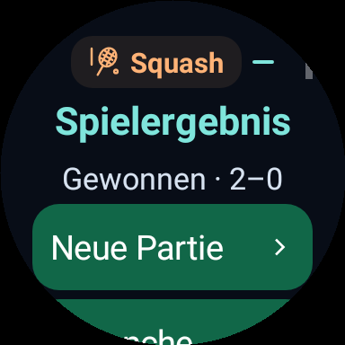
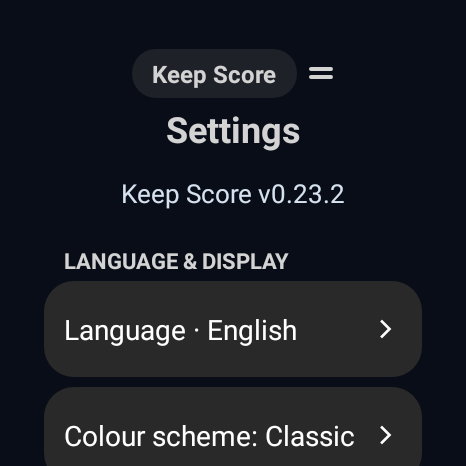

Watch menu map
Keep Score v0.23.4. Open a section or search for the action you need.
Menu colours
New matchCurrent matchSportsResultsPlayersStatisticsLive sharing & refereeFavourite formatsScoring rulesSettings
Start & sport menu
- Home
- The Keep Score logo and name appear above the Home tiles. The colour of each destination follows it into the menu heading, depth bars and options. When idle, New match opens sport selection and setup. Results opens the last selected sport. Players, Sports and Settings have their own tiles. A prepared or running match opens its scoreboard. A paused match opens Resume. A recent finished match opens its saved result.
- Choose sport
- First action while idle or after a saved finish: New match for the last selected sport. Otherwise open the current match or resume. Select a sport below to set up a different one.
- Sport list
- Badminton, Padel, Pickleball, Squash, Table tennis, Tennis. Players, Live sharing & referee and Settings follow the list. When you arrive from Home or after discarding a match, Back returns to Home.
- Sport menu
- New match or Current match, Players, Live sharing & referee, Results, Statistics, Favourite formats, Scoring rules, Change sport and Settings. The scoreboard’s Menu opens this sport directly.
- Sport locked
- An unfinished or paused match keeps its sport. Current match and Cancel match are available. Discarding asks for confirmation.
After the final point
- Match result
- The final tally appears above New match, Quick rematch and Mark match as done. Marking it as done opens Home and keeps the result in history. A saved finish closes after three hours without interaction, including time while the app is closed.
- Scorecard & actions
- Read scores and timing, share the result card, change the opponent or team, undo the last point, entered set or retirement on the current result, or delete this result after confirmation.
- Current match after finishing
- New match, View result, Match details and sharing where available. If history is full, Save match result has priority. An explicitly deleted result stays deleted.

New match & favourite formats
- Scoring & format
- Choose the match length and the available sport-specific rules. Squash has singles. Padel has doubles. The other sports offer singles and doubles.
- Scoring options
- Badminton: 21 points (cap 30) or 15 (cap 21). Pickleball: traditional side-out, Rally 2025 or Rally 2026, target 11, 15 or 21. Tennis: advantage or No-Ad. Padel: advantage, Golden Point or Star Point. Tennis and padel: full deciding set or match tie-break to 10.
- Players & service
- Choose an opponent, and for doubles a partner and second opponent. The player picker also offers No name and Add player. Select a first server and, where applicable, the first receiver or next opposing server.
- Create or cancel
- Create match opens the prepared scoreboard. Cancel goes back. Replacing an unfinished or unsaved game asks for confirmation. A referee or watch invitation can supply its own Create & invite action.
- Favourite formats
- Use favourite format, save the current setup as a named favourite, or remove a favourite. Opening a favourite from the sport menu starts a setup draft.
Scoreboard & current match
- Scoreboard
- Tap a side to record the rally. Undo corrects the most recent entry. Next starts the next game or set when ready. The sport/Menu header opens the menu. A followed scoreboard opens Shared match.
- Current match
- Start, pause or resume comes first. Then Enter set score, Match details, Opponent or Players, Match options, Live sharing & referee, Save retirement result and Cancel match.
- Enter set score
- Choose the winner and score using presets or the number wheel. Review and save. Replacing a partial set or undoing an entered set asks for confirmation. A saved set offers the next set or another score entry.
- Match details
- View both sides, game/set scores, rules and start time. Depending on the state: next set, view saved result or save an outstanding result.
- Match options
- Change opponent/team, serving indicator or supported match length. New match opens replacement setup. Retirement selects who retired and saves a result. Cancel match offers Keep playing or Discard match.
Players & player pickers
- Players
- Your name, saved players with sport icons, Add player and Edit names on phone. Open a saved player to rename them or remove them from future selection.
- Search, filter & sort
- Type a name, or tick Last 30 days to show players from completed matches across all sports. Partners and both opponents count in doubles. Untick it to show everyone. Each sort works with the filter. Most recent activity is first in the sort menu, followed by A–Z and Z–A. Going back from a player restores your search and filter.
- Assignment & history
- Find the same controls in new-match setup, current and saved matches, doubles roles, manual result entry and result filters. Removed players can still be found in historical filters. The phone directory includes the same filter and three sort choices.
Results, filters & statistics
- Results
- The first card shows the newest match that fits your filters, with the score, opponent or teams, and date. Tap it for the full scorecard. Filters and Options follow the first card on each page. Scroll down for more matches and page controls. An empty history offers Add past match. With active filters, you can reset them directly.
- Result filters
- Reset all filters, choose mode, opponent (all, unnamed or a saved/removed player), today, last seven days, this month or custom from/to dates. Mode is shown for sports with both singles and doubles.
- Result options
- Add past match, view results on the phone, export all or filtered results as CSV, import CSV or delete all results for the selected sport after confirmation.
- Add past match
- Choose rules, match length, date, optional players and each game/set score. Edit or remove the last set and save the complete match. The current scoreboard stays available.
- Statistics
- View matches, games/sets, points and available game details for the sport. Switch singles/doubles/all modes where supported and open the matching Results list.

Live sharing, referee & other watches
- Live sharing & referee
- Available from the sport selector, sport menu and current match. Open the audience link, referee on phone or share with watches. Join another match with a watch code or supported NFC.
- Audience & referee
- Start or end the audience link and show or share its QR. Referee on phone is where the host opens the referee QR or hands over scoring.
- Share with watches
- Pair watches groups the watch code, an invitation QR that shows the code on your phone, and NFC where supported. Disable new joins here. Connected devices is a separate page to view, refresh or remove a device. Back or swipe returns one level at a time.
- Shared match
- A following watch opens Set scores, Live sharing & referee or Settings. At the end choose Save to my results and, as a follower, select which player you were. The host can cancel an unfinished match.
Settings & watch shortcuts
- Language & display
- Language (watch language, English, German, French, Spanish), colour scheme (Classic, Neon Lime, Sunlight), watch brightness and screen during play (keep on or allow sleep).
- Feedback
- Vibrations (off, all points or milestones), Announce score on/off, court and interval reminders on/off.
- Data & shortcuts
- Backup & restore opens a phone transfer to download or restore a full backup, or download the previous copy when available. Watch tile & face score explains the tile and complication. Enable match shortcut appears when notification permission is needed.
- About me
- Read about Andrew Lindley, the developer of Keep Score. Open Imprint & contact and scan the QR on your phone to see the publisher and reveal the contact details.
- App updates
- The direct-install version can check, allow updates, download and install, or show phone installation help. The Play preparation build offers Open Google Play.
- Diagnostics
- View local status and recent events, copy details, or show a QR to open the report on your phone.
Phone transfers, review & return
- Temporary phone link
- From results, players or backup, create the link, show the phone QR or share it through supported NFC. Receive changes opens a review before applying; End transfer closes the link.
- Corrections & recovery
- Review staged names, result imports/edits or a backup restore. Confirm to apply or cancel to keep the current watch data.
- Where am I?
- The title shows the current menu. Each menu level adds one horizontal bar beside the badge. Screen readers announce the level. Tap the heading to expand the path. Back, the hardware button and swipe use the same return destination. A Scoreboard shortcut appears during play where available. QR pages use the full display without the depth bars.

No matching menu entries.